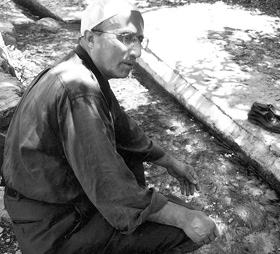
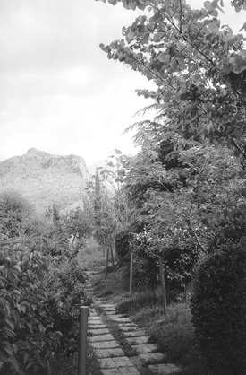
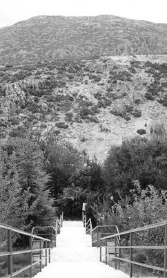

Barla Kelimesi ve
Barla’nın Nurlu Menzilleri
Barla Kelimesi ve Sırran Tenevverat
Barla, Latince bir kelimedir. Saklanan, gizlenen, siperlenen gibi manaları vardır. Nasıl Nur Risaleleri, “Sırran Tenevverat” (yani, gizli gizli aydınlanır, tenevvür eder) müjdesi altında parlamış ve bütün âleme intişar etmişse, aynen öyle Barla’nın ismi de aynı sırra mazhar olmuş ve o beşaret altına gizlenmiştir.
Allah’ın Arslanı, Habibullah’ın Damadı ve Amcası’nın evlâdı, hem gazi, hem de şehid Hazreti Ali Efendimiz’in müjdeli, kerametli haberinde şöyle diyor:
– “Sirâcü’n-Nur (Nurun kandili) gizlice, parlak bir şekilde yakılır. Sirâcü’s Sürc (Kandiller kandili) perde altında, gizli gizli yakılır ve nurlanarak yayılır.”5
Bedi’ manasına gelen Celcelûtiye’de geçen bu müjdeler, Nur Risaleleri hakkında verilen sevinçli, müjdeli ve kerametli haberlerdir.
Barla’nın Çeşmeleri
Barla’nın suları boldur. Mescidlerin ve çınarların serin gölgelerinde pınarlar gürleyip durur. Barla’nın etrafındaki dağlarda, yaylalarda ve ormanlarda da çok pınarlar vardır. Bazıları şunlardır:
Kara Kavak veya Paşa Kayası Çeşmesi6
Karaca Ahmet Pınarı
Ulu Pınar
Koca Pınar
Biy (Bey) Deresi Pınarı
Güdük Su Çeşmesi
Gamber Çeşmesi
Yerli Çeşme
Pazar Camii Çeşmesi
Söğütlü Çeşme
Çarşılı Çeşme: Çam Dağı eteklerinde, Üstad’ın abdest alıp yudum yudum su içtiği çeşme.
Yokuşbaşı Çeşmesi: Üstad’ın sekiz sene kaldığı, Nurlar’ın ilk dershanesi ve medrese-i Nuriye’sinin altındaki çeşme.
Muş – Muj – Musaların Çeşmesi: Üstad’ın kendi tamir ettirerek imamlık yaptığı mescidin yanında bulunan çeşme. 1935’de, yanındaki mescid yıkılmış, taşları tepedeki okul için kullanılmıştır. Çeşme ise bugün hâlâ durmaktadır.
Ak Çeşme: Üstad’ın Barla’ya adım attığı 1 Mart 1927 salı günü, kaldığı Ak Mescid’in yanındaki çeşme. Ak’lar içindeki bu semtin karakoluna getirmişlerdi Nur Üstad Bediüzzaman’ı.
Barla’dan Çam Dağı’na uzanan üç-dört saatlik orman yollarında da çeşmeler, pınarlar vardır.
Barla’nın orman yollarından dört saatlik Çam Dağı’na gidebilmek büyük saadettir.
Bu aydınlık yollardaki çeşmelerden abdest almak, kana kana su içmek büyük bir mutluluktur.
Hele hele bu çeşmelerin başında sabah namazı kılmak ve seherleri yaşamak!
Gülün kokusunu, gülün güzelliğini tarif mümkün mü? İşte, Nur Risaleleri böyle güzel bir iklimde yazılmıştır. Barla’nın çınarları, Nurlar’a kürsü olmuştur. Barla’nın çeşmeleri, Nurlar’a konak olmuştur. Barla’nın dağları, Nurlar’a dershane olmuştur. Barla’nın ormanları Nurlar’a cami olmuştur. Barla sıddıklarının dere bahçeleri, Nurlar’ın cennet bahçesi olmuştur.
Barla’nın Nurlu Mevkileri
Nahiye’nin batı taraflarında “Öğlen Taşı” adı verilen yüksek ve sivri bir tepe var. Öğlen Taşı eteklerinde “Kara Kavak” veya “Paşa Kayası” mevkii vardır.
Yine Öğlen Taşı Tepesi’nin bağrında bir kilise vardır. Eteklerinde ise hamam harabeleri bulunmaktadır.
Güneyde İlafa Deresi, kuzeyde ise Bey Deresi.
Eğrenni yaylası.
Hastanın Belönü.
Güneylerin Isparta yolunda Karacaahmed ziyareti, Karadut gibi yerler Barla’nın çeşitli nur menzillerindendir.
İlk Nur Dershanesi’nin önü Barla Deresi’dir. Güneydeki bu dere ve tepeden sonra Koca Pınar’ın olduğu düz ovalar ve yollar vardır. Buradan ise Çam Dağları yaya olarak tam yedi saattir. Nur Üstad, Barla’dan çıkarak, bu uzun yollardan da Çam Dağları’na gidermiş. Barla’da Bey Deresi’ne doğru, yani kuzeydeki dört saatlik Çam Dağları yollarını çok dolaştık. Ama inşallah bir gün yedi saatlik bu güneydeki nurlu yollardan da Çam Dağları’na ulaşmak gönül niyazımızdır.
Altı “Ak”
Barla civarında altı tane “Ak”la başlayan belde tespit edebildik:
1. Ak Keçili
2. Ak Dağ
3. Ak Çaşar
4. Ak Pınar
5. Ak Doğan
6. Ak Belenli

Yüzbaşı Refet Barutçu’nun Nur Üstad’ı ilk defa ziyaret ettiği Karakavak Paşa Kayası Pınarı’nda namaz ve niyaz. (2005)

Cennet’e dair olan Yirmi Sekizinci Söz’ün yazıldığı ve
Sıddık Süleyman Kervancı’nın Dere Bahçesi iken “Cennet Bahçesi” namını alan bahçesinden iki manzara.

Barla Dağı
Güney Anadolu’nun Göller Bölgesi’ndeki dağın en yüksek tepeleri 2734 metre yüksekliğe sahip Gelincik Ana ile 2860 metrelik Ayı Yatağı Başı’dır.
Barla Dağı doğuya doğru büyük bir çıkıntı yapar ve birçok derenin kaynağını verir.
Buzul devrinde, dağdaki buzulun 2050 metreye kadar indiği, buzul taşlarından anlaşılır. Kuzeydoğu ve doğu yamaçlarında karaçam ve köknar ormanları ve fundalıklar vardır. Bir kısmı da çayır ve otlaktır. (Meydan Larousse, c. 2)
Barla’da Bahar
Barla baharında, bağ ve bahçelerinde ne güzel gönül nağmeleri yazılmıştı.
Seksen senedir Barla’yı terennüm eden çok şiirler yazıldı. Bizce bu gönül seslenişlerinin en güzeli ve duygulusu Hilmi Doğan Beyefendi’nin mısralarıdır.
Doğan Bey, bu manzumesini kırk yılı bulan, eski bir zaman içinde yazmıştı.
Bahsi geçen şiir, 7 Temmuz 1970’de haftalık İttihat Gazetesi’nin yüz kırkıncı sayısında yayımlanmıştı. O günlerde Barla aşk ve sevgisiyle yapmaya çalıştığım “Aziz Barla” ismindeki araştırma ve röportajlarım İttihat Gazetesi’nde yayımlanmaya devam ediyordu.
Doğan Bey, şiirini “H.D.” harflerinden oluşan bir rumuz kullanarak yayımlatmıştı. Ne büyük hikmet ve ne büyük güzellik ki Hilmi Doğan Beyefendi bunlardan habersizdi. Bir his ve bir önseziyle açıktan imzasını atmamış, onun yerine rumuz kullanmıştı. Zaten bu saklamak ve gizlemek de – bir manası da “saklamak, gizlemek” olan– Barla’ya yakışıyordu. O günlerin şartları karanlıktı. O günlerde devlet memuru olduğu için bu nurlu şiiri yazmaktan dolayı ceza alabilirdi. Bu ceza tehlikesinden dolayı imzasını gizlemişti(k).
Tepelice, Çam’a çıktım,
Gelincik Dağı’na baktım,
Mümkün olsa kalacaktım,
Bir ömür boyu Barla’da.
Seherde açan güllerin,
Çeşmindeki bülbüllerin.
Cennet yurdumda göllerin,
En güzel soyu Barla’da.
Karadut, Cennet Bahçesi,
Karakavağın meşesi,
Ulu Çınar’ın gölgesi,
Gölgeler koyu Barla’da.
Çam Dağı’ndan esen yeller,
Zikir arkadaşı dallar,
Üstad’a muntazır yollar,
Gelecek deyu Barla’da.
Yeter ey nefs-i pür nâdân!
Fâriğ ol hubb-u dünyadan,
Bir gececik olsun uyan,
Bırak uykuyu Barla’da!
H.D.